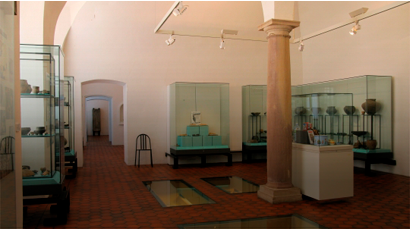
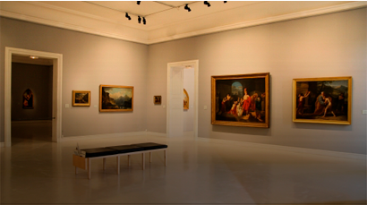
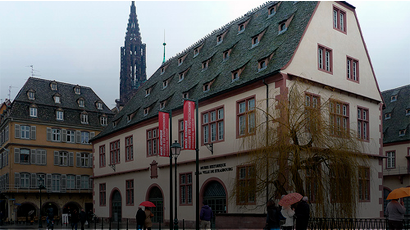

<section class="documentsections" id="galerie">
  <div class="row large-up-3 medium-up-2 small-up-1">
    <figure class="columns"><a href="#"><figcaption>Aubette 1928</figcaption></a></figure>
    <figure class="columns"><a href="#"><figcaption>Cabinet des estampes &amp; des dessins</figcaption></a></figure>
    <figure class="columns"><a href="#"><figcaption>Musée Alsacien</figcaption></a></figure>
    <figure class="columns"><a href="#"><figcaption>Musée Archéologique</figcaption></a></figure>
    <figure class="columns"><a href="#"><figcaption>Musée des arts décoratifs</figcaption></a></figure>
    <figure class="columns"><a href="#"><figcaption>Musée d'art moderne &amp; contemporain</figcaption></a></figure>
    <figure class="columns"><a href="#"><figcaption>Musée des beaux-arts</figcaption></a></figure>
    <figure class="columns"><a href="#"><figcaption>Musée historique</figcaption></a></figure>
    <figure class="columns"><a href="#"><figcaption>Musée de l'oeuvre-notre-dame</figcaption></a></figure>
    <figure class="columns"><a href="#"><figcaption>Musée Tomi Ungerer</figcaption></a></figure>
    <figure class="columns"><a href="#"><figcaption>Musée zoologique</figcaption></a></figure>
  </div>
</section>
